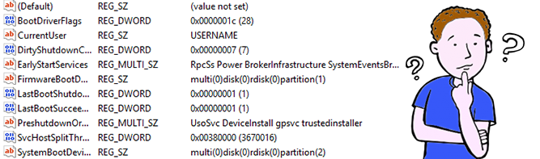
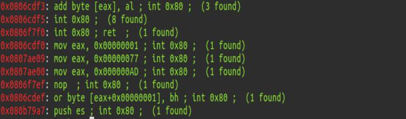
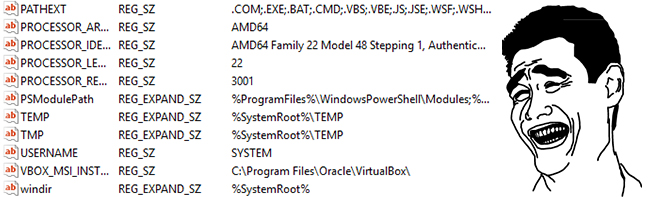

Derniers Articles March 08, 2020 Technique de la retour à la libcDans cet article je vous présente comment exploiter une vulnérabilité pour bypass le système NX avec la technique de la retourne à la libc.  January 11, 2020 Exploitation d'une vulnérabilité de type ROPDans cet article je vous présente comment exploiter une vulnérabilité de type ROP (Return-oriented programming) permet de contourner des mécanismes notammement l'ASLR et le système NX.  August 10, 2019 HackTheBox - ArkhamLe système Arkham, disponible sur la platforme HackTheBox, fut très intéressant et amusante. Le niveau de difficulté était plutôt élevée, étant donné qu’une bonne énumération était amplement suffisante. De plus, j’ai appris beaucoup de chose tout au long de l’exploitation des failles de ce système.  May 18, 2019 HackTheBox - ConcealDans cet article je vous présente comment être root dans la boîte Conceal, c'était une boîte très amusante mais en même temps assez difficile car il y avait pas mal de configuration à faire au niveau du protocole IPSEC pour avoir un shell dans le système. Pour le root il y avait un système qui était activé et on pouvais être root grâce au programme Juicy Potato.